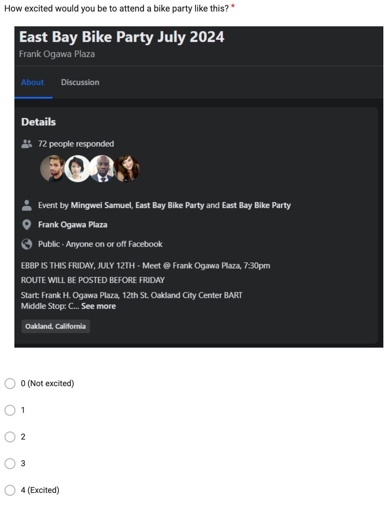

Do people attend parties just based on how hot everyone is?
An airtight analysis by me, Elliot C.
In the age of flaking on plans I often wonder what's getting people out of the house. I'm only slightly ashamed to admit that I'm much more likely to attend an event where everyone's super attractive. Sue me. And I wonder how many people secretly or subconsciously feel the same way...
So I designed this experiment to test if people are just scoping out the hotties when they choose where to hangout.

Experiment 1
Who's hot?
First, I need to know who's hot and who's not. Hotness is a fungible thing. In 1980's Dallas, it was big hair. In Edo Japan it was wakushu boys with a shaved forelock. Now it's anyone who's able to find employment and suitable housing.
To get a baseline sample, I downloaded 20 stock profile pictures and had people rank them from 1 to 10
Here's the photos people ranked

What we found will shock you.
And it's all coming up right after this...
At the container store, we believe life's most important boxes go beyond the casket. From the modern Aura line of polyeurethene storage bins to the classic little house on the prairie wood crate look, we believe anyone can hoard discreetly in any style and for any season.Ok we're back. And here's what we found
Not everyone's attracted to everyone else
Out of 33 responses...
- 19 people think men are hot
- 26 people think women are hot
- 12 people think androgynous people are hot
Given all that...
Women are hotter than men
Maybe all that time not spent doing our hair and brows caught up to us, or maybe as a society we're just better at objectifying women. Or maybe stock photo websites just choose photos of women based on attractiveness moreso than men.
Some faces were more polarizing than others...
Maybe all that time not spent doing our hair and brows caught up to us, or maybe as a society we're just better at objectifying women. Or maybe stock photo websites just choose photos of women based on attractiveness moreso than men.
Experiment 2
Will dangling these hotties in front of people make them say they're more likely to attend an event?
Here's how it went down
I took screenshots of 5 different Facebook event invites and replaced the profile pictures with our hotties and notties.
Then I asked people to rate how interested they were in the event on a scale of 0 (not excited) to 4 (excited)
A third of people saw 5 event invites that looked like this (the two highest scoring women pics and the 2 highest scoring men pics)
A third of people saw 5 event invites like this (the two lowest scoring women pics and the 2 lowest scoring men pics)

And a third of people were in a control group that saw 5 event invites with placeholder profile images